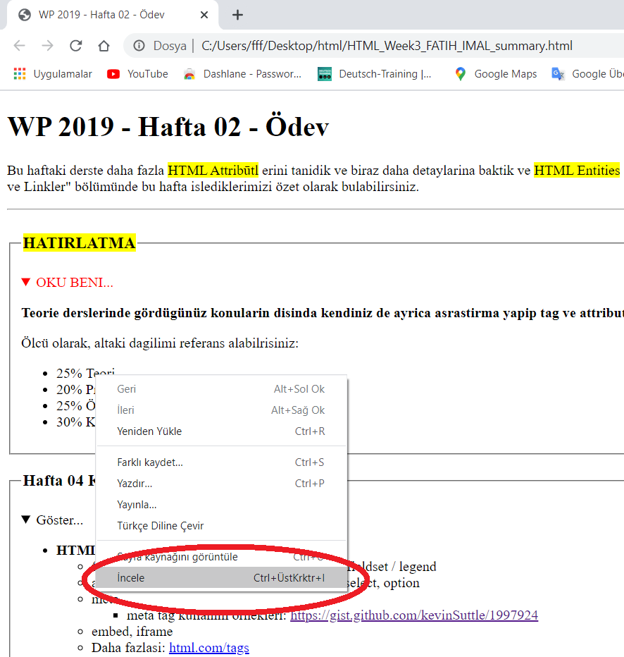
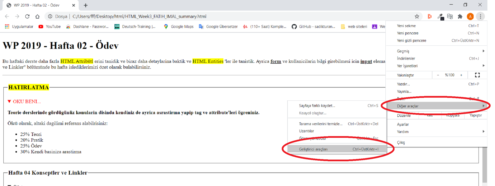
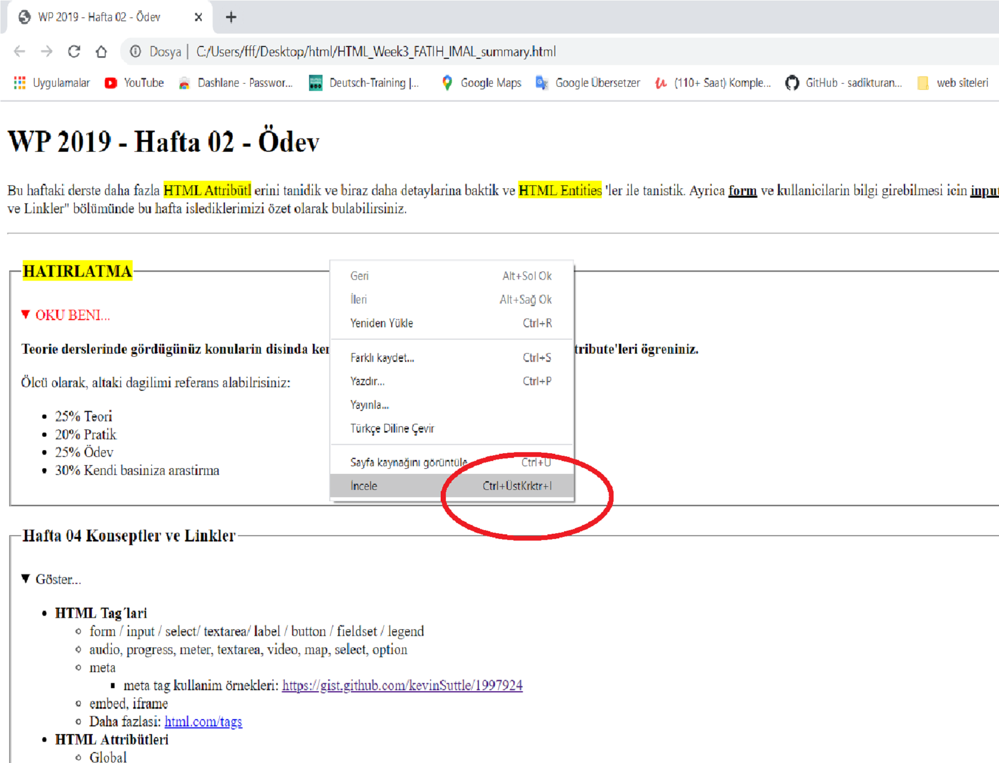
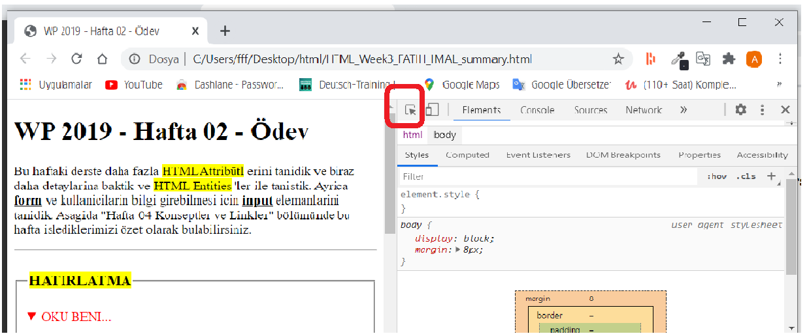
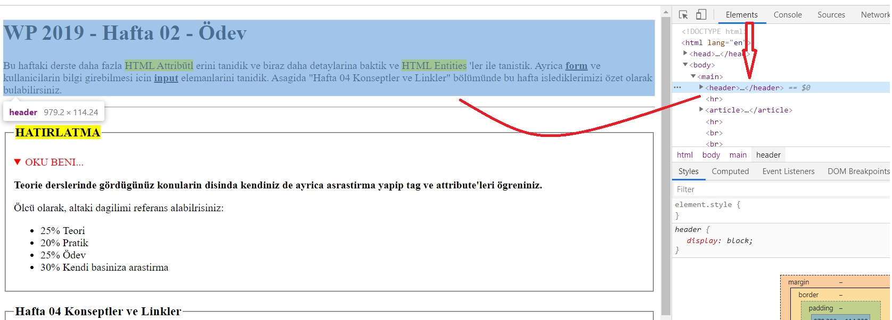
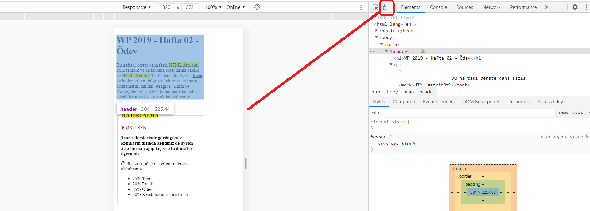

DevTools´u Görüntüleme
- Sayfa üzerinde detaylarini gormek istedigimiz kismin uzerinde sag tiklayarak cikan menüden
inceleyi tiklayarak.

- Browserin arama satirinin yanindaki dikey ... menü cubugunu tiklayip daha sonra
diger araclara tiklayip buradan cikan menüden de gelistirici araclari
tiklayarak.

-
Kisa yol tuslari ile: ctrl + shift + I ya da F12 tusu ile

DevTools´da Elementleri Secme
-
Acilan DevTools sayfasinda sol üstte bulunan inspect butonunu tiklayip sectikten sonra sayfa
üzerinde istedigimiz bölüme tiklayabiliriz.Boylece DevTools üzerinde sectigimiz bölüm isaretlenir.

-
DevTools sayfasinda HTML kodlarinin yer aldigi Elementsler menüsünden imlec ile gezindigimizde
sayfa üzerinde koda denk gelen alan renklenir ve
islem yapmak istedigimiz koda tikladigimizda ilgili alan secilmis olur.

DevTools Üzerinde Islemler ve Sayfayi Düzenleme
Farkli Cihazlarda Görünüm
DevTools´un sol üst kösesinde inspect butonunun yanindaki cep telefonu ve tablet ikonuna tiklayarak sayfanin ve sayfadaki resim, sekil vs bolümlerin farkli boyutlardaki cihazlarda nasil göründügünü görebiliriz. Responsive tasarimlari bu sekilde kontrol edebiliriz.
Ayar ve Düzenleme
DevTools; sayfayi hazirlarken kullandigimiz IDE programlarinin yaptigi bir cok görevi yerine getirebilir.
DevTools´un bir avantaji da yaptigimiz degisikliklerin hemen sayfaya yansimasidir. Böylece yaptigimiz islemleri
hizlica gözden gecirebilir ve ince ayarlari DevToolsdan görerek yapabiliriz.
Ancak yaptigimiz degisiklikler sayfaya kaydedilmez. O anda sayfaya yansir. Sayfa yenilendiginde kayitli dosyadaki
veriler tekrar yerini alir. Kalici olmasini istedigimiz degisiklikleri kopyalayip IDE programlarinda kaydetmeliyiz.
Yapabilecegimiz diger islemleri soyle siralayabiliriz;
- Yeni Taglar ekleme ve silme.
- Sectigimiz alanlari gizleme.
- Atribütleri degistirme, silme ve yeni attribütler ekleme.
- Css alanina giren konularda degisiklikler ve düzenlemeler yapma.
- Js alanina giren konularda degisiklikler ve düzenlemeler yapma.